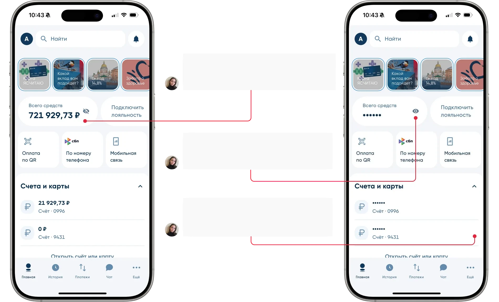
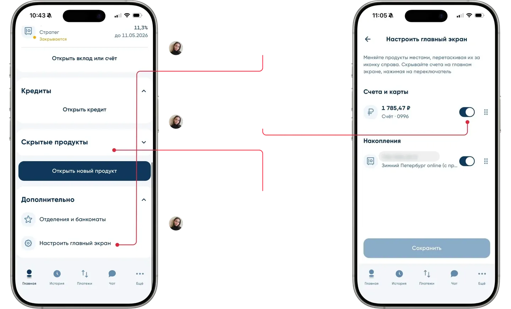
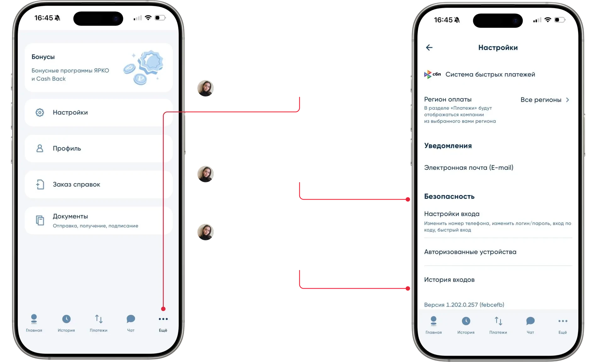
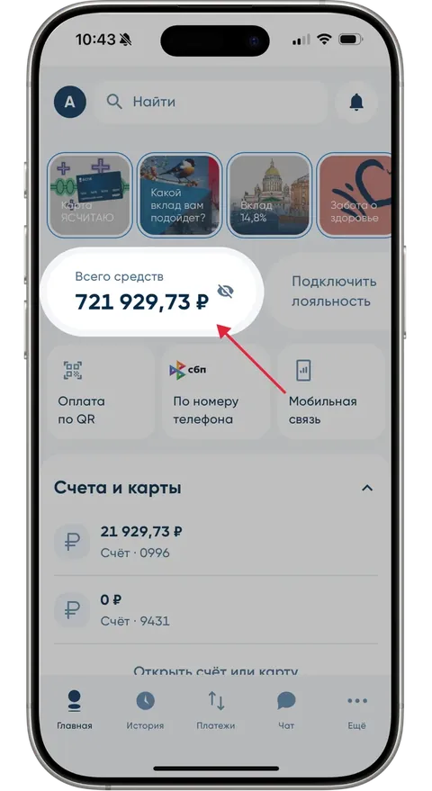
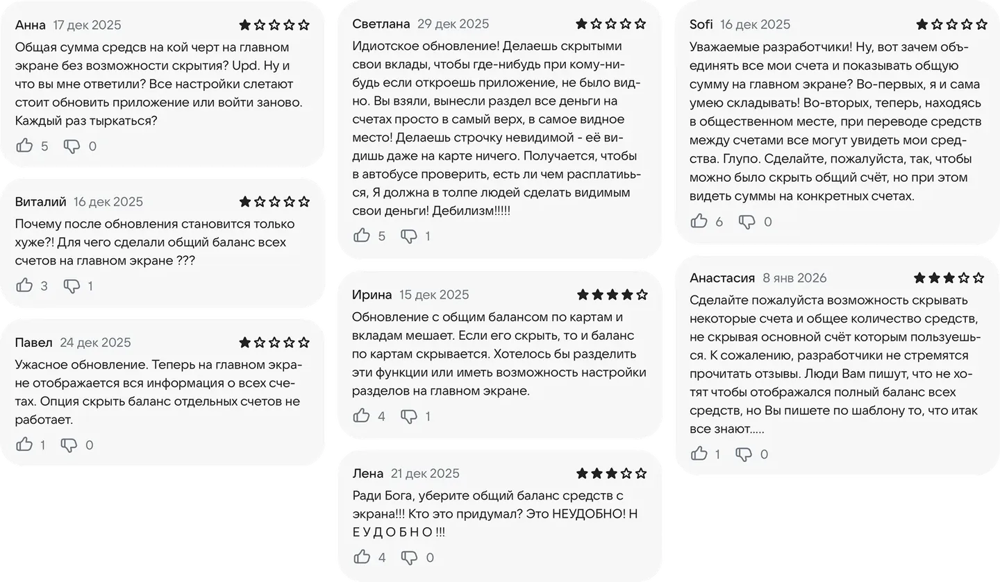
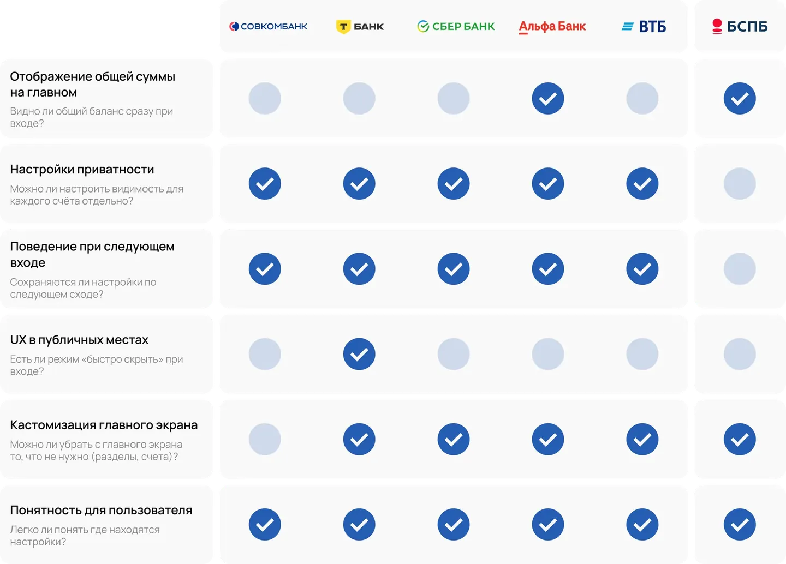
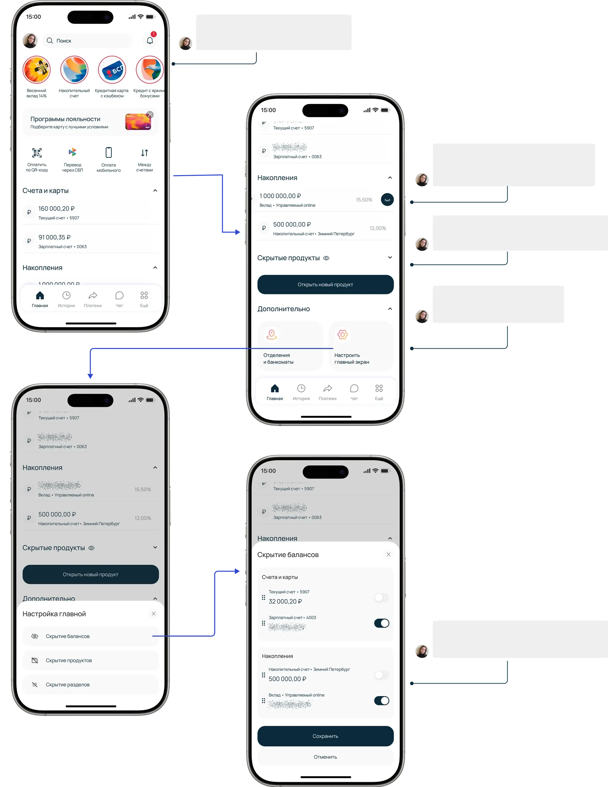

Банк Санкт-Петербург
Разработала решение для сохранения приватности баланса в общественных местах: настройки видимости и скрытие встряхиванием телефона
- # Банк Санкт-Петербург
- > мобильное приложение банка · mobile app · fintech
- ## роль продуктовый дизайнер
- ## методы UX-аудит, интервью, анализ отзывов, бенчмаркинг, JTBD
Проблема
При входе в приложение пользователь сразу видит совокупный баланс всех счетов и вкладов на самом видном месте — в общественном месте его может увидеть кто угодно рядом
Задача
Изменить логику отображения балансов на главном экране: скрыть общую сумму по умолчанию и добавить гибкие настройки видимости счетов и разделов
UX-аудит
Начала с аудита текущего интерфейса: как приложение показывает баланс и что в нём можно настроить



Интервью
Поговорила с 7 пользователями приложения, проанализировала ответы и выделила ключевые моменты

Почему общий баланс на главной — проблема
- Люди избегают пользоваться приложением в общественных местах
- Пользователям редко нужна общая сумма по всем счетам
- Настройки «скрытого глаза» слетают при следующем входе
- Часть пользователей «уносит» деньги в другой банк, а здесь только получает зарплату
- «Есть ощущение, что это свободные деньги, хотя большая часть лежит на вкладе»
Анализ отзывов
Проверила, встречается ли проблема в отзывах в интернете, — просмотрела больше 100 отзывов

Вывод
- отзывы подтвердили: пользователям действительно неудобно, когда баланс всех счетов виден на главном экране
К чему может привести игнорирование проблемы
Потеря клиентов
Если пользоваться приложением неудобно, человек может уйти в другой банк
Меньше активности
Из-за страха, что кто-то увидит баланс, люди реже заходят в приложение вне дома
Негативные отзывы
Чтобы привлечь внимание разработчиков, активные пользователи оставляют негативные отзывы
Барьер для продуктов
Люди открывают вклады в других банках, чтобы суммы вкладов не было видно
Бенчмаркинг
Проанализировала интерфейсы Сбера, Т-Банка, Альфа-Банка, ВТБ и Совкомбанка и свела результаты в одну таблицу

Выводы
- в 4 из 6 банков не показывают совокупный баланс;
- 5 из 6 позволяют скрыть баланс счетов по отдельности и сохраняют это при следующем входе;
- Т-Банк умеет быстро скрывать баланс жестом при входе в приложение;
- крупные игроки дают кастомизировать интерфейс и быстро добраться до настроек приватности
Гипотезы
Сформулировала гипотезы на основе JTBD — Jobs To Be Done
- J1Когда я захожу в приложение, я не хочу видеть общую сумму по всем счетам — мне нужны только деньги, доступные прямо сейчас, чтобы понимать, чем я реально могу распоряжаться
- J2Когда я в общественном месте и не помню, скрыт ли баланс, я хочу быстро скрыть все суммы, чтобы не переживать, что кто-то заглянет в экран
- J3Когда я в общественном месте, я хочу быть уверена, что никто случайно не увидит мои балансы, чтобы чувствовать себя спокойно
- J4Когда я один раз настроила скрытие баланса, я хочу, чтобы оно сохранялось при следующих входах, чтобы не повторять одно и то же
- J5Когда я показываю телефон другому человеку, я хочу быстро скрыть балансы некоторых счетов, чтобы он не увидел все мои деньги
Макеты и решение
Рассмотрела два контекста использования приложения
Плановое использование
Пользователь один раз настраивает приложение «под себя» и пользуется им в комфортной обстановке
Экстренная ситуация
Пользователь оказался в публичном месте, и ему нужно мгновенно скрыть баланс всех счетов
01 · Плановое использование
Добавила постоянные настройки главного экрана: пользователь управляет видимостью всех элементов — счетов, разделов и балансов, и настройки сохраняются.

02 · Экстренная ситуация
Встряхнув телефон на экране ввода пин-кода, пользователь скрывает баланс на всех счетах. Попробуйте — нажмите кнопку, а с телефона можно встряхнуть по-настоящему.
появится подтверждение «Скрыть баланс всех счетов при входе», после него — главная со скрытыми суммами
Почему именно встряхивание
- это естественный жест для человека, который не хочет, чтобы кто-то заглядывал в его телефон;
- жест знаком: встряхивание есть в iOS (отмена действия), раньше было «Shake to update» у Samsung;
- управление жестом уже используют крупные компании — Т-Банк, Газпромбанк, Яндекс Банк
Метрики
Показатели, на которые может повлиять решение
Retention
эффект
Рост retention среди тех, кто часто пользуется приложением вне дома
почему
Чувство безопасности в публичных местах снижает тревожность и повышает желание возвращаться
CSAT и NPS
эффект
Рост активных пользователей
почему
Функция вызывает позитивную реакцию и благодарность продукту в «неудобных» обстоятельствах
Частота
эффект
Чаще открывают приложение днём и вечером
почему
Исчезает барьер «проверю баланс, когда буду дома»: это можно сделать сразу